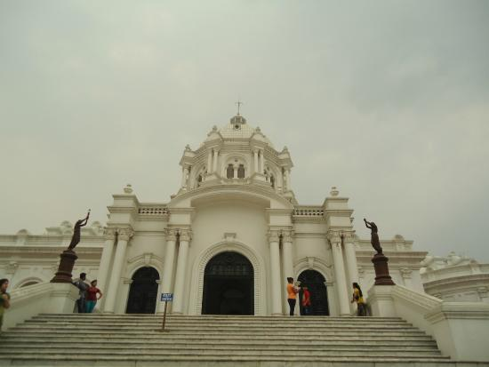

State museum

Neermahal is a former royal palace built by King Bir Bikram Kishore Manikya Bahadur of the erstwhile Kingdom of Tripura,India in the middle of the lake Rudrasagar in 1930 and was completed by 1938. It is situated in Melaghar, 53 kilometers away from the Agartala, the capital of Tripura. The palace is situated in the middle of Rudrasagar Lake and assimilates Hindu and Muslim architectural styles.

HOW TO REACH ?
Nearest Airport: Agartala
Nearest Railway Station:Agartala
Nearest Bus Stand:Agartala